Lecture notes links
Lecture 2 - Processes structure and management, Threads, Scheduling
Lecture 3 - Process scheduling
Lecture 4- Process scheduling in multi-core systems
Lecture 5 - Sensor OS, TinyOS, resource contention, Split-phase
Lecture 6 - Mobile OS, Android, Intents
Lecture 7 - Linux management, system calls, process creation, parent behaviour
Lecture 8 - Concurrency, mutual exclusion, semaphores
Lecture 9 - principles of memory management, PTE fields, base registers/segmentation/Paging
Lecture 10 - page allocation techniques, free bit map, Swapping
Lecture 11 - Memory Replacement Techniques
Lecture 12 - IO subsystem, IO drivers, Buffering
Lecture 13 - Disk scheduling, IO management examples
Lecture 14 - Sensor Framework/Manager/Events/Examples
Lecture 15 - OS FS, Structure, Concept, Open, Operations, Metadata
Lecture 16
Lecture 17 - FS in linux, Superblock, inode, VFS,EXT3 FS, block devices,
Process Management lectures 1 to 8
Lecture 2
Process Structure
Process - Instance of a running program or a context(state and what it owns) associated with a program in executiona process has executable instructions, data, stack, buffer memory, administrative info. (stored in kernel)
process context - represents a series of info a process knows - process/parent/user ID, CWD ,File descriptor, code area, stack, heap, priority, environment, Signal disposition (whats blocked and whats waiting) , Unmask (specifies what permission are granted to created files)
Process Management
- Create - resources are allocated
- Terminate - release resources
- Change program - replaces code its executing
- Block - wait for an even e.g IO
- Awaken process - after sleeping resume running it
- Switch process - process context switching
- Schedule process - take control of CPU
- Set/get process params - like priority
A process can be Ready, Blocked, Running. It is created and terminated
Fork , vfork, clone
fork() - makes a copy of the parent, the copy is: identical, executes
asynchronously (compete for CPU) ,
computes different things to the parent.
calling fork() returns the child ID to the parent, and 0 to the child - thats why when invoking
fork()
its with an if statement.
vfork() - variation of fork - child shares same address space as parent
clone() - creates a new child process and specifies which parts of parents must be copied to a
child
process and which parts are shared.
Threads
Lightweight process within a process - all threads share the same process context and code.
. All threads are running concurrently. Most benefit most on multi core system
invoking a thread is fast as the its context is minimum.
thread affinity - describes which core the thread is allowed to run ( should be avoided as it
reduces the schedulers effectiveness)
Scheduling
before (historically) there was batch processing one process had the CPU at a time. Now the CPU is time shared.
The kernel holds the scheduler which schedules the processes based on an algorithm.
it uses things like FCFS (first come first serve) or Round robin ( queue ), Priority scheduling (
kernel
processes always have higher priority).
Lecture 3
Priority Scheduling
Picking which process gets CPU time, picked based on an int value. Priority may change after its time slot.
Multi-level feedback queue - dynamic implementation of priority queue
processes are assigned levels ( according to their priority) each level has a predefined
execution time.
once a process executes - the priority decreases . If a process is blocked its priority
increases.
Idle process- located on the lowest level, it is executed when there are no other processes to run. it performs some cleaning tasks and switches the PC to sleeping state. Invokes the Kernel power policy management. a set of rules to help decrease power consumption.
Priority Inversion
Occurs when one thread has a lock on some resources and that thread is low in priority. Some other high priority thread needs those resources and is waiting ( cannot be scheduled ). the Scheduler then schedules the next priority thread. To solve this issue of waiting. Scheduler will randomly boost lock holders priority level.
Scheduling in Multi core systems
Implement Real parallelism: running multiple processes at the same time on different cores.
Scheduler's main challenge: to identify and predict the resource needs of each process and
schedule them
in a fashion that will minimize shared resource content, maximize shared resource utilization, and
exploit the advantage of shared resources between cores.
Scheduler needs to be aware of
Shared resource topology,
Resource requirements of processes , and
The inter-relationship between the processes
Lecture 4
schedule them in a fashion that will minimize shared resource contention, maximize shared resource utilization, and exploit the advantage of shared resources between cores.
The scheduler need to know : resource topology , resource requirements of a process, inter-relationship between the processes.
L2 memory's impact on performance has a lot to do with knowing what resources are shared, the
number of
active
processes and the memory access patterns of the individual process.
Heterogenous data access patterns of memory-intensive-processes running on the cores sharing
caches can
lead to
cache contention and sub-optimal performance.
Prediction of resource use
The processes characteristics and behaviour can be predicted using micro-architectural history of a process by using a performance counter or if thats absent it uses some heuristic.
Scheduling Domains - load balancing
In multi core systems, the scheduler must balance the load so that there are no idle or overloaded
cores.
domain based scheduler - describes what decision should be made, describes the systems structure
and
scheduling policy in sufficient detail.
scheduling domain - a set of cores which share properties and scheduling policies and can be
balanced
against each other. Scheduling domains are hierarchial.
Group scheduling
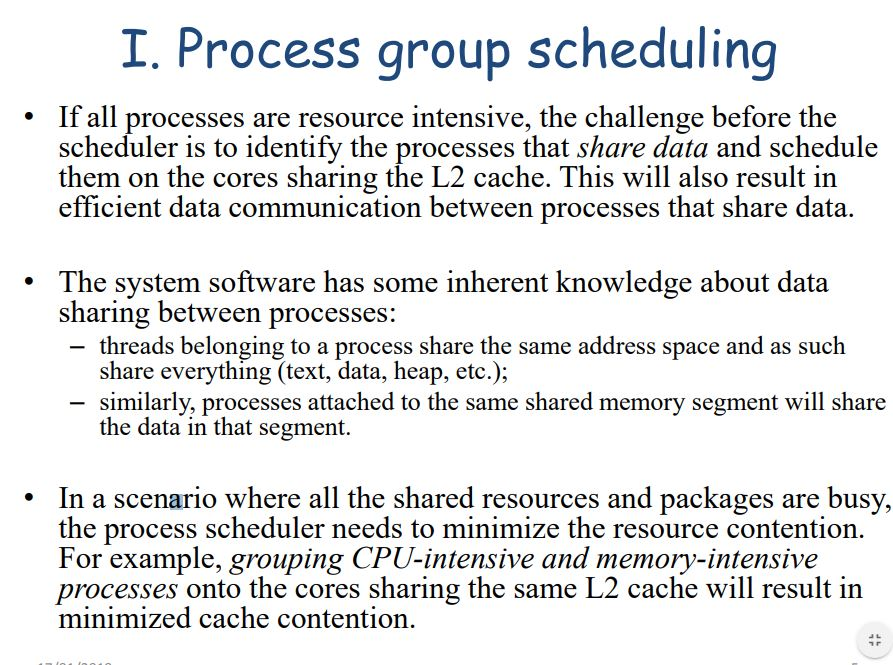
the core groups are treated as single units. When scheduler balances the laod it balances
based on
the groups and not what is going on inside the group.
therefore if we know what process shares context with another we can schedule them on the same
core/package. otherwise it will lead to L2 contention.
Scheduling them on different packages would be faster but more power hungry.
Domain Policies
policies that say how decision should be made at that level of the hierarchy. things like how often to make attempts between balancing the loads or how long a process should sit idle, policy flags
Heterogenous multi-core
Mobile phones use it. They have energy efficient cores that are slower, and have more power, big.LITTLE. A72 is high perfromance - A53 is energy efficient.
Lecture 5
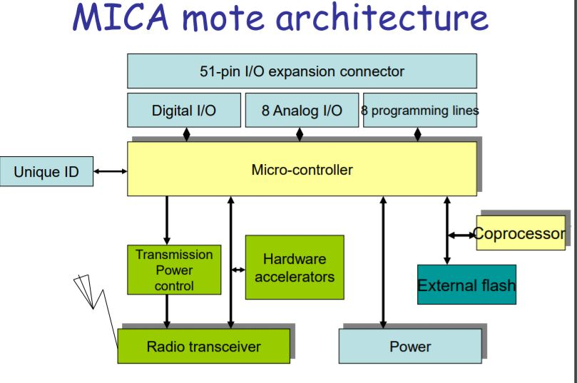TinyOS
Each app is built into the OS. It has no file system, no virtual memory and basic commands.
The sensors are connected into a sensor network ( they can pass on data to others and
communicate?)
Theres no time sharing, a task runs until its completed. Events cannot be pre empted by another event. Event handlers are very simple ( few ins.)
If an event occurs (generated by hardware - interrupts), it posts a task . that task will then take
control of the CPU.
if the CPU queue is empty, the sensor sleeps as it is battery powered.
there is lack of fairness when the same task is posted all the time. So the CPU will never be free.
This was fixed in TinyOS 2.x - it fixed the 2 issues
no more than one post of a task in the queue - only of instance in the queue. the posting is
delayed.
allow new task models with priorities ( int ), earliest deadline fist etc...
The split phase operation
Operation is called, but the caller returns immediately, doesn't wait for the operation to be
completed.
Once its completed it triggers an event, which notifies the caller.
They are using different hardware units, so they are running concurrently.
This raises another issue : contention, erase condition, several task want access to the same resource
resource contention - handled by explicit rejection of concurrent requests. All
split-phase operations
return boolea values indicating whether a request to perform the operation is accepted.
if send() call is made the AM compnent(if currently busy) it will send an error signal.
Lecture 6
Mobile OS -Android
Linux Kernel - middle ware applications - A general purpose system.
It has its own JVM (Dalvik VM).
The main Goal of Android is to allow apps to interact with one another by sharing content;
starting
other apps.
There are Device drivers - to allow for camera, WiFi, flash memory and other things. Imported libraries
(C/C++) for things like OpenGl, Webkit and other media.
Because Android is using a linux kernel, it must use the same process model. It assigns each app
a
different user with a unique ID ( android is multi user Linux system)
The application are split into activities, like viewing list of message is one activity and viewing the
message and replying is another activity.
An app in the background shoundn't use any CPU, just memory resources.
Intent
Android apps are composed of Components(not a single entry with a Main() function like PC apps )
this means that the OS can run an app as it needs from the point it needs. Like it doesn't always have
to start at a main screen an app can start running where the intent is meant to go. like if your
intent
is to send an email, it will launch the app on the composing email page straight away.
Android app Lifecycle
the life cycle is managed by the system based on resources available and user needs. Current activity gets higher priority, while an app in the background can be killed for resources.
Each android app runs in a separate process which hosts its own virtual machine. its a protected memory env. and the system conrol its priority
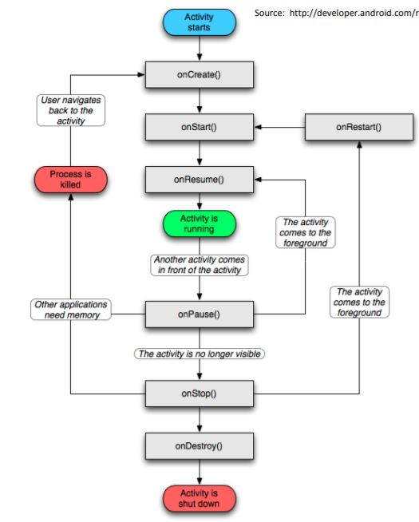Task
A task is a stack of activities - Values for it are set in the root activity (launcher).
one activity can start another one ( despite the app ). Tasks are arranged in a back stack. Top
of the
stack is the activity currently running and selected. when that activity starts another it pushes
it
down the stack and when the back button is pressed it pops of the current activity and displays the one
below it in the stack
Multitasking
apps held in the back in RAM, until more RAM is needed it kills the bottom of the stack.
Lecture 7
System Calls - Linux
- execve() allows a process to specify a program to begin running in place of
the current one.
-
exit() is for process termination - cleans up open files at app level. then exits so
kernel
can release resources.
- kill() is the means by which a process sends a signal – for
some signals, the default behaviour is to terminate the
process, for most there is a signal handler that is invoked
when the signal is received.
- wait4() and waitpid() allow a parent process to inquire as to
the state of a child. Their purpose is to notify the parent
when the child has exited and to deliver its exit status to the
parent
- nice() gives the process the ability to adjust its priority level
– higher values represent lower priorities.
calls to scheduler
- sched_setScheduler() allows a process to change policy and priority levels
- sched_shceduler() - returns what policy the sched is using
- sched_yield() - allows a process to give up its time slice.
Process states
- TASK_RUNNING
- TASK_INTERRUPTIBLE - can be awaken by signals
- TASK_UNINTERRUPTIBLE - dont come out in response to signals
- TASK_STOPPED - can be resumed by signal SIGCONT
- TASK_TRACED - can control the exec of another process ( debuggers)
- EXIT_ZOMBIE
- EXIT_DEAD - process terminates and parent not notified
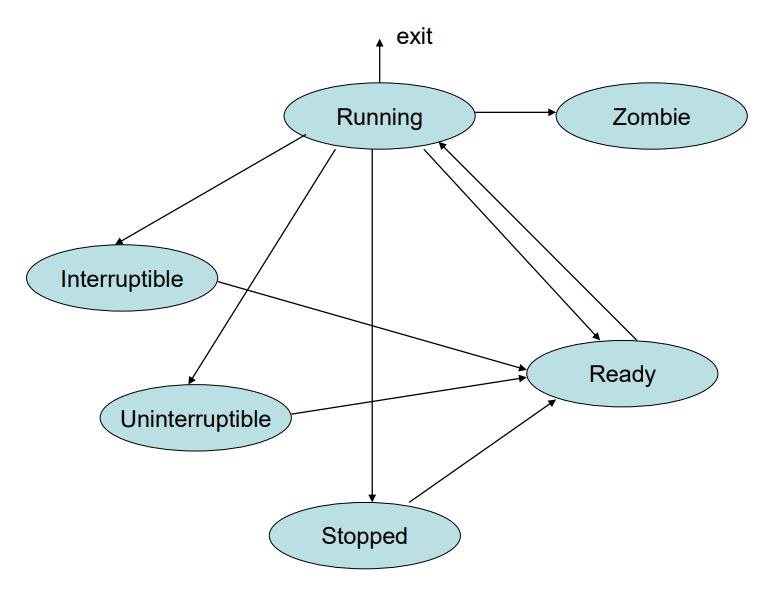
Process creation
created by either fork() , vfork(), clone()
all of the aboce call do_fork(). which copies the context shared into the child. sets
up suspension
if its vfork(). set up the initial state of child (ready,Stopped)
Alloc_pid() - tries to do prev_id + 1 , and then checks the bit vector map in
a constant operation,
if the id is used or not. If its used then the next available one is used.
The key passed arguments are: clone_flags, stack_start, regs
and pid
The child is set up to go directly to the code that returns from
the process creation call.
setting up parent behaviour
if vfork() then parent waits until child calls exit() or execve(). TASK_UNINTERRUPTIBLE is its state as it waits.
Lecture 8
Race condition
Occurs in concurrent/parallel systems, when multiple processes or thread read and write data so that the final result depends on the order of execution of instructions.
-
Process Interaction
- Run independently but compete for resources
- Share resources
- Co operate together , one result depends on the other
Mutual exclusion - two or more processes compete for the same resource, only one gets
the resource at
a time.
critical resource - when only a single processor can have it at any time ( e.g a printer),
starvation is experienced when a process cant get it, cos of low priority or smt.
rules for mutual exclusion - only one process enters the critical section. If critical section is empty, any process is allowed in without delay. it can't starve a process (deadlock). only finite time given in the critical section. no assumption are made about process speed or number of cores.
semaphores
Variable that has int value upon which 3 operations can be executed:
1. initialise to a nonnegative int value
2. semWait operation - if value neg process blocked otherwise continue
3. semSignal - increments semaphore value. if less than or equal 0 then process blocked.
Binary semaphore
Variable that has 1 or 0 value upon which 3 operations can be executed:
1. initialise to 1/0
2. semWait operation - if value 0 process blocked otherwise continue
3. semSignal - checks if a proc is blocked if yes unblock, else set semaphore to 1.
Priority is not changed when it interacts with the blocked q through a semaphore, semWait and
semSignal.
semWait and semSignal, primitives are atomic ( meaning they cannot be interrupted)
When a process increments semaphore, and it wakes up a blocked process, both of the processes begin
to run concurrently.
Memory Management 9 to 11
Lecture 9
Principles of Memory Management
- User Area (user processes co-exist) and Kernel Area
- Memory allocate based on availability - if low , process might only get enough to just run else it will get all it needs.
- Protecting the access to one process’ memory space is an important security feature provided by hardware (not the OS).
- CPU issues only physical addresses.
- Process layout is specified in terms of virtual addresses
- MMU (memory management unit) takes care of protecting the memory space
- Methods of Translation - base registers, segmentation, paging
Base registers
Virtual address added to the base register resulting in the physical address. limit can be either the size of the alloc. mem. space or the last physical memory address allowed to this process.
segmentation
Diff memory segments store diff. parts of the program: code, data, stack. each segment has separate base
and limit registers.
one possibility is to use CPU dedicated registers or higher order bits of VA within tables
Paging
The virtual address space is divided into pages of 2^k bytes
each. If the virtual address is n bits, then the virtual memory
space consists of 2^n-k pages.
upper n-k bits are the page number and lower k bits are offset into page.
2^k space is called page frame
pages are managed in page tables
indexed by page number in virtual address, PTE defines translation
Page frame number (PFN): determines the page frame to which the page is mapped - the PFN is combined with the offset to give the physical address.
PTE fields
protection bit - if set the page is read-only.
present bit / valid bit - if set the page is in memory if not set the page is not in memory or
not allocated to that process.
modified bit / dirty bit - set if write op occured on the page
accessed bit - set if page was/is being accessed
Memory services
Main services - allocation and de allocation
explicit alloc - specifies exactly which memory address is required
implicit alloc - it needs memory but doesnt mind where
de-allocate - can be explicit (specific area to clear) or not and perform mark and sweep algorithms
Lecture 10
if fixed size pages - free bitmap is used to show free pages.
sometimes processes need contiguous page frames.
If memory is allocated in variable-sized blocks, the list
needs to be searched to find a suitable block.
Fragmentation
Waste memory as allocation of pages is not always ideal or perfect fit.
more than needed - internal fragmentation
left not allocated - external fragmentation
Memory allocation Techniques
- First fit - Takes the first block that is greater or equal to size requested. Tends to cause allocation towards the low memory addresses - it gets fragmented while upper addresses remain free
- Next fit - like first fit but begins search from the place last allocated. More evenly spread out alloc.
- Best fit - allocates a free block that is closest to the size to the request. significant external frag. (like first fit)
- Worst fit - allocates largest size block for each request. if most request are of similar size it minimizes external frag.
-
The buddy system is a memory allocation algorithm which has a
tendency to have very low external fragmentation, but worse
internal fragmentation.
The algorithm works by assuming memory is divided into memory blocks of 2 x and takes a request of size n.
1. If n < smallest allocation unit, set n to be the smallest size.
2. Round n up to the nearest power of 2. Select the smallest k such that 2k ≥ n.
3. If there is no free block of size 2k
, then recursively allocate a block of size 2. k+1 and split it into two free blocks of size 2k
4. Return the first free block of size 2k in response to the request.
whenever a block is split, a pair of buddies is created they are then split or paired together. Buddies can merge to create a larger block.
Swapping consists in transferring one blocked process memory space on disk. Then, when the process becomes active, it’ll be restored.
Lecture 11
Resident set - a number of page frames assigned to a process.
Local replacement - replacing a page in the same process .
global replacement - choose some page based on an algorithm and replace it.
A page can be locked in the memory and cannot be replaced .
Page replacement Policies
- Belady's min : page that will be used least soon is chosen. Optimal as it assures that the number of page faults is minimized. not practical ( cant see the future ).
- First in first out ( FIFO ) - Replaces the page that has been in the memory the longest. Implemented with a queue.
- Second chance - extends FIFO - examines the accessed but and if it was accessed it gives it another chance.
- The clock Algorithm - 2 clock hands are moving synchronously above pages the distance between hands determines if a page was accessed, if not accessed for a long time it can be swapped out.
- Not recently used - refers only to pages with A=0 and M=0. Works well with clock algorithm as it anaylyses A and M bits.
- Least recently used - based on time since a page was last used. rarely used as its hard to time every page.
- Not frequently used - each time Access bit is cleared ( periodically by OS) a counter is incremented for A=1. Pages with smallest counters can be swapped. can be bad for newly loaded pages, old used pages are kept in ( aging )
- The working set - number of pages a specific process is using at a time. A process has 2 thresholds , upper and lower. If it has more pages that upper thr. its a good candidate for page swapping. if you swap a page and it reaches lower thr. you might as well swap all the pages.
Page swapping rather than segment swapping gives more flexibility in satisfying the requests.
Memory is the 2nd most important resource managed by the OS. Kernel monitors the correct function of the
main memory.
I/O devices 12 to
Lecture 12
IO Subsystem
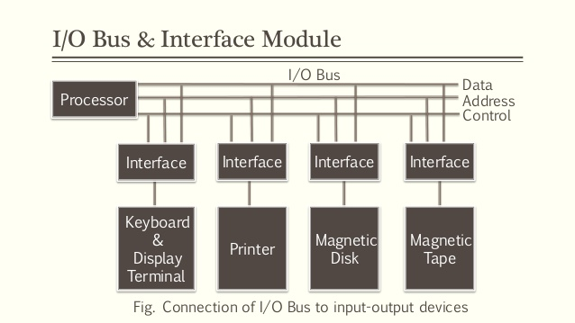
Peripheral device - stores or prints data, connects to network, used to communicate with the
computer.
Device controller (kernel privileges) - Peripheral devices access it and it allows them to
perform
operations, its a
software that runs the controller, it manages the events generated by the controller ( interrupt handler
).
IOP - IO processors is a controller sometimes called a channel (IBM).
The aim is to develop standardized controller/device interfaces like USB (universal serial bus).
speed of devices vary and their functionality; they are Heterogenous.
DMA (direct memory access) unit is used to free the CPU. Controller registers can be
memory mapped or
addressed within the IO space.
System bus - very fast data rate as it need to talk with CPU
IO bus - much slower as its talking to slow devices
We need a driver that is controlling the peripheral device.
Like the disk driver, this can then make the interface between any application and the disk
IO Drivers - Software
A driver belongs to a family of drivers it abstracts all devices from the kernel of a particular
type. it is stored in Main Memory in kernel space
examples are: bus protocols (SCSI parallel, USB), storage(disk), network cards.
A driver becomes a family member by inheritance . it inherits data structures and common
behaviour to all members. For example, all SCSI controllers scan the SCSI bus as
the SCSI Parallel family defines and implements this scanning
functionality.
Main reason why the driver interact with the family is because it uses and calls their
function.
Access point and communication channel relate to the bus/protocol to which a device is connected to. ( PCI ethernet driver uses IOPCIDevice object from PCI family to communicate over PCI bus )
The IO layered architecture gathers common functionality into classes the Driver can interact with.
Each layer is a client of the layer below it and a provider of services to the layer above it.
Steps taken when a New device has been plugged in :
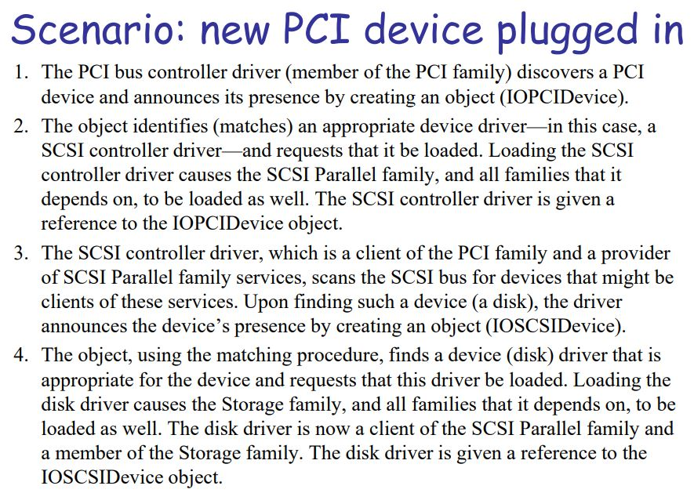The device driver work
Processes that issue read/write operations are blocked and placed in queues. First theres a translation happening (as the device issues an operation). the driver translates it into controller params and from there the read/write op can be performed
Device driver structure
first control flow - Executes on behalf of user process that requests IO
second control flow - responds to interrupts
the two flows must co ordinate the access and try to not command the controller at the same time.
Driver is split into two halves that deal with - upper ( user requests ) lower (controller ). Mutual
exclusion is used to prevent corruption of the shared queue
Device Management Techniques
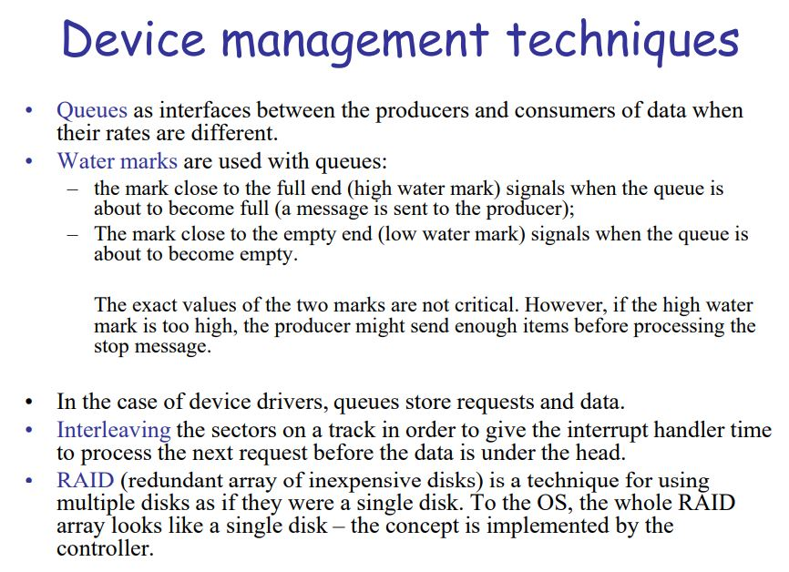Lecture 13
Disk operations
Seek time : position to the right track
Rotational delay: position to the right section
total time = seek delay + rotational delay + read/write times
I/O schedulers
- Noop scheduler - merges adjacent requests (sectors already in the queue)
- Deadline scheduler - merges requests like above. Has 3 queues : 1.Wire Queue FIFO 2.Read queue FIFO
3.Requests sorted by sector num.
Exp. times read:500ms write:5s. Writes are buffered so processes don't have to stall. processing executing reads are blocked.
requests are emptied from Sorted queue first ( and relevant requests removed from other 2 q's). If some request is overdue the sched. moves to that queue next. - Anticipatory scheduler- it adds a delay (to anticipate) another request into the same disk sector so they can be executed together
- Complete fair queuing scheduler - separate queue for each process ( processes make requests). Requests are merged in order of sector num. Round robin (executes 4 req. per q) between processor qs.
6th Edition UNIX
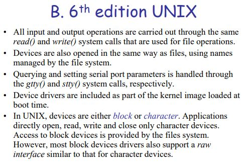Representation of devices
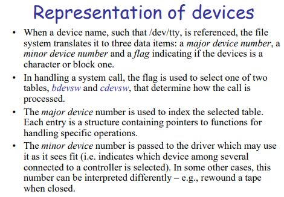Elevator scheduler
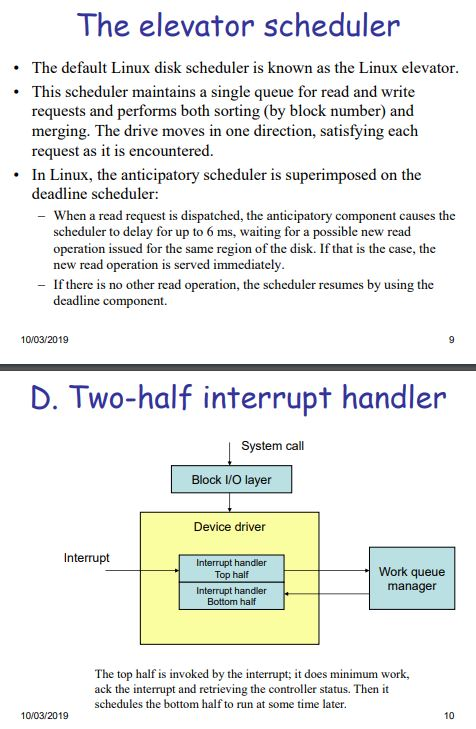Rest of the lecture doesn't seem too important / never asked as a question
block and character drivers; IO devices in linux; Parallel port driver;
Lecture 14
Sensors
Motion sensors ; Environmental sensors ; Position sensors
There can be several sensors of the Same Official typle.
The purpose of the OS is to allow us to get raw data from sensors and use it in apps.
Sensors can be Hardware or Software.
Certain sensors have different data rates as their interaction requires little lag ( microphone, touch screen).
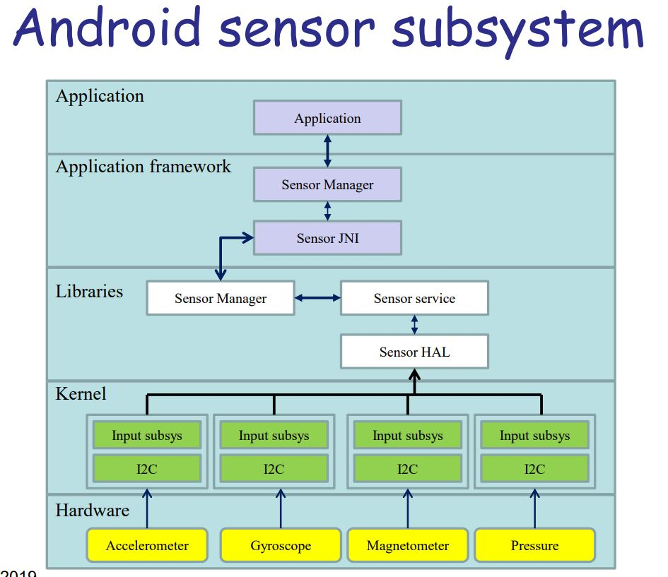Frameworks Role
Framework is responsible for:
HAL (Hardware abstraction Layer) - links application to the sensors and manages many apps using
the same
sensor.
Activates ( turns on ) a sensor when a request is made, deactivates it when no apps want to use
a
sensor.
Sampling frequency - max requested frequency of data coming in from a sensor. The sensor works
at the
highest freq requested meaning some apps will get data more frequently than asked.
the maximum reporting latency will be the minimum of the requested ones.
Sensor Manager
Apps create listeners for the sensors with the Sensor Manager. The sensor manager provides a lot of methods for accessing and listing sensors, activating listeners and getting info.
Sensor JNI
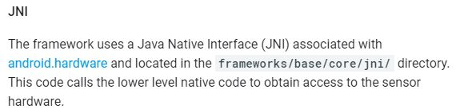Sensor Events
SensorEvent class creates an object that has info about the sensor event. It is associated with a
sampling process, and this value is part of the event object, not necessarily when it detects
change.
sensor info: raw data, the type of sensor, accuracy of the data, timestamp for the event
Reporting modes
Each Sensor has only 1 reporting mode out of 3.
continuous - events generated at constant rate.
On-change - events generated only if values change.
One-shit - Detects an event it sends the event and deactivates itself. Trigger sensors.
External sensors can be accommodated by application-level driver framework. This interface is simple and
allows lots of external sensors and reduces the amount of code needed to access a sensor.
The sensor Framework automatically multiplexes the communication channels allowing different
types of
sensors to be used simultaneously by an app.
The File System 15 - 17
Lecture 15
A file is a contiguous logical address space. it can store numeric, character, binary; data or code.
File attributes:(metadata)
- Name - only info in human readable form
- identifier - unique tag
- type
- Size
- Protection - read/write/execute
- Time,data,user id - usage monitoring and security
-
File Operations
- Create
- Write
- Read
- Reposition within file
- Delete
- Truncate
- By calling open(F1) - it brings the file entry to main memory. close(F1) brings it back to dir. structure on disk.
file pointer - points to last read/write location , file-open count - counter of times a file was open. Disk location of the file- cache of data access info. access rights - per-process access mode info.
Access Methods
Sequential Access - read next, write next, reset, no read after last write (rewrite)
Direct Access - read n , write n , position to n (read next write next), rewrite n
n = relative block number.
Metadata
it is the data about the file (name,size...)
compressed files are automatically decompressed when read. It is also used to assign an app to
a file
(file types).
The FS design
Can be in the Kernel; or User process.
FS uses two important data structures : open file table ( entries ( file attr.) of all open files )
and mount table (what makes the FS accessible.)
Example
Embedded systems do not have disks. Some apps may need files some may not. Therefore the system can work
without a file system.
You can plug in a disk. And that disk has a file system. And then it is working as a
user process , as
it was added ( changed ) to the system it cannot become a kernel process
Lecture 16
Nothing really important not asked anywhere in questions.
Lecture 17
Virtual File System
Supports a wide range of FS by working with Two levels of abstraction.
Higher level, Virtual file system has common services and gen. file op. , this layer allows any FS to
interact with the system.
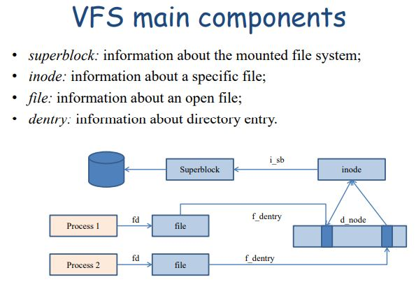
-
The VFS common services and operations:
- has classes for each area of file system activity
- Manages Kernel file abstractions
- Resolves User requests for the FS
- Interacts with the FS based on mount point traversal
- Handles the requests from memory management and process management The Specific FS has a structure containing function pointers to get the operations VFS provides.
When a FS is mounted it provides structure with a pointer to the functions that loads the superblock.
Superblock
superblock - information about the mounted file system, has functions that carry out operations on mounted FS. Most functions relate to manipulating Inodes
-
Superblock data structures
- Total number of inodes
- File system size in blocks
- Free block counter
- Free inode counter
- Block size
- Blocks per group
- inodes per group
- 128-bit file system identifier
- Mount counter
Inodes
inode: information about a specific file; stores the info of location on disk of blocks of file.
Identified by inode number.
super_operations:
alloc_inode(), read_inode(), write_inode(), write_super()# handle modified superblock , sync_fs()
create() – create a new file in a directory;
– lookup() – fetch a directory entry from a directory;
– mkdir() – create a new subdirectory;
– getattr() – return metadata from an i-node.
VFS has a cache in Main Memory of the directory entries ( mapping from file names to inodes for quick searching). When a file is opened an internal structure representing the file is created which points to file operations(read,write..)
Rest of the lecture talks about EXT3 . Write op, Linux input/output - Didn't see a question about these
Q1 Process Management
2018 Summer
a. A process can create new processes by using specific system calls. Consider fork() and vfork() and analyse the differences between them.
Fork() - creates an identical copy of itself, it shares the context.
vfork() - the child shares the address space (otherwise same as fork()), but blocks the parent until
its completion.
The main difference between them is that fork() executes asynchronously with its child while vfork()
the parent waits(suspended) for the completion of its child ( until it calls exec())
b. Consider a system that is using 8 multilevel feedback queues for scheduling user processes (numbered from 0, highest priority, to 7, lowest priority). Consider three processes, A, B and C that start on level 2, 4 and 5 respectively and have the execution time 0.5 s, 0.9 s and 3 s respectively. If the time slice, denoted by q, for level 0 is 10 ms, determine the time slice for each level. Show the execution of processes A, B and C on the time axis and determine when and from which level they exit the system.` We assume there is no I/O operation. The execution time slice for each level i is determined by the equation t = (2^i)q.
A exits at level 5 1300ms into execution.
B exits at level 6 at 2360ms into execution
C exits at level 6 at 4400ms into execution
execution order : A A B A C B A(exit) C B(exit) C C C ....(exit C)
c. What is the impact of I/O operations on the priority of processes A, B and C in 1.b? As an example, consider that process B will run for 480 ms after which it will start disk operations that will take 2 s. Follow B’s execution and determine its exit queue.
B exits at 4280 ms into execution at level 6.
after b is blocked (for 2s) A executes and quits. and then c executes until b is unblocked and joins the queue.
d. Explain the concept of group scheduling.
It is faster to schedule tasks on separate cores (core packages) its also not power efficient as L2
memory contention is high.
Group scheduling attempts to reduce power consumption by scheduling processes that share data onto the same core
package( one that shares L2 cache).
By making them share the package it reduces memory contention and is saving power. It knows which
processes share data ( like threads that belong to the same process they share all the context or
processes attached to same mem. segment)
Q2 Memory Management
Q3 I/O Devices
structure of device driver difference between device controller and driver mobile sensors ( draw the Android sensor subsystem and explain each role of the application framework ) explain android sensor event and how sensor value is communicated. explain sequence of operations associated with the insertion of a new PCI device consider Two I/O disk schedulers and explain their execution explain how IO drivers interact with its family of drivers (example)